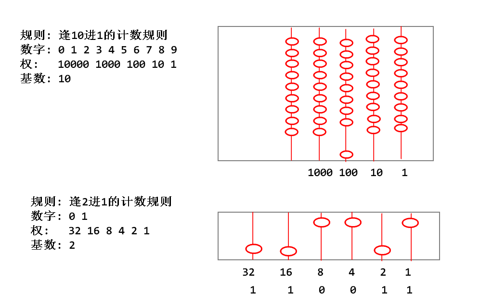
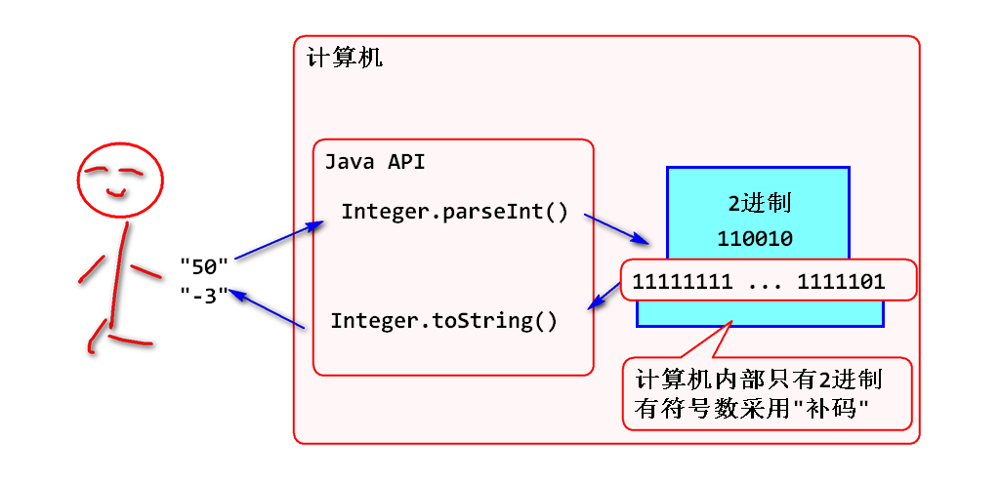
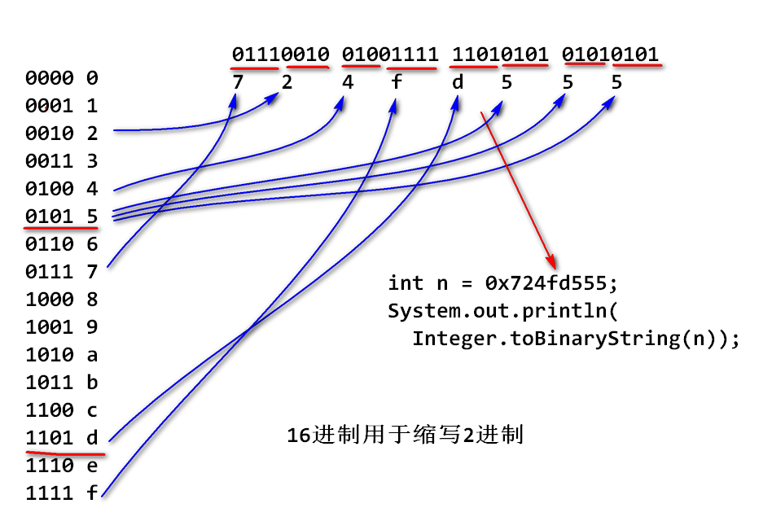
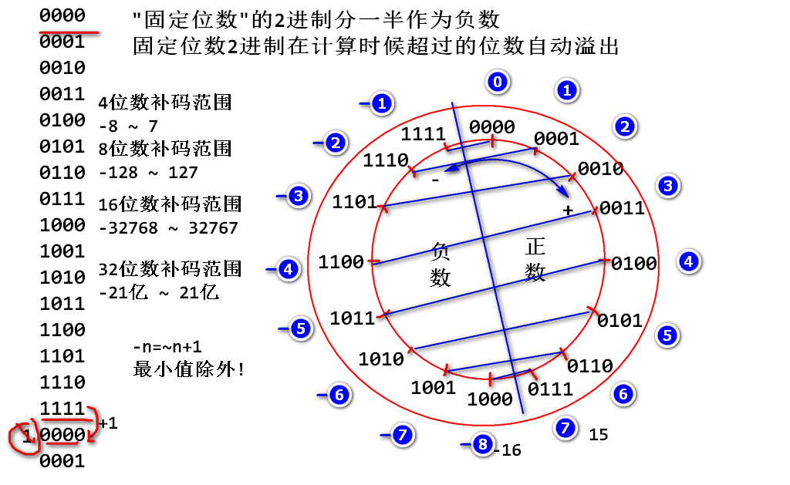

案例:
/*
* 认识一下2进制
* 数据在计算机中是2进制的!
* int long 等数据都是2进制的!
*/
int n = 50;//110010
//toBinaryString 将一个在内存中实际的2进制
//转换为字符串! 就是输出n在内存中的情况
System.out.println(
Integer.toBinaryString(n));
逢二进一的计数规则!

Java 利用了API解决了2进制的输入与输出问题:

案例:
/**
* 输出 0 ~ 50 全部的 2进制数
* 手工验证:每个2进制数字的值
*/
for(int i=0;i<=50;i++){
String bin=Integer.toBinaryString(i);
bin = StringUtils.leftPad(bin,32,'0');
System.out.println(bin);
}
逢16进一的计数规则!
其本质目的是用于简写2进制. 2进制从后向前(低位到高位)每4位可以缩写为一个16进制数.
计算机专业人员需要使用2进制时候, 都是采用16进制缩写!

案例:
/**
* 16进制用于缩写2进制数
* 01110010 01001111 11010101 01010101
* 7 2 4 f d 5 5 5
*/
int n = 0x724fd555;
System.out.println(
Integer.toBinaryString(n));
补码是计算机中处理 有符号数 的编码规则
补码的编码核心思想: 将固定位数的2进制数分一半作为负数使用.
4位数补码为例!

案例:
/*
* 查看一个数据的补码
*/
int n = -3;
System.out.println(
Integer.toBinaryString(n));
//Java 利用parseInt将10进制负数转换为补码
int i = Integer.parseInt("-3");
System.out.println(
Integer.toBinaryString(i));
System.out.println(i); //toString(i)
案例:
/*
* 补码特殊值的规律
*/
int n = 0; //0x0;
int m = -1;//0xffffffff;
int max = Integer.MAX_VALUE;//0x7fffffff
int min = Integer.MIN_VALUE;//0x80000000
System.out.println(
Integer.toBinaryString(n));
System.out.println(
Integer.toBinaryString(m));
System.out.println(
Integer.toBinaryString(max));
System.out.println(
Integer.toBinaryString(min));
long l = Long.MAX_VALUE;
System.out.println(
Long.toBinaryString(l));
案例:
/**
* 输出 -50 ~ 50 之间的补码
*/
for(int i=-50; i<=50; i++){
System.out.println(
StringUtils.leftPad(
Integer.toBinaryString(i),
32, '0'));
}
案例:
/*
* 补码的互补对称现象 -n=~n+1
*/
int n = 8;
int m = ~n+1;
System.out.println(m); //-8
//分析计算原理:
System.out.println(StringUtils.leftPad(
Integer.toBinaryString(n),32,'0'));
System.out.println(StringUtils.leftPad(
Integer.toBinaryString(~n),32,'0'));
System.out.println(StringUtils.leftPad(
Integer.toBinaryString(~n+1),32,'0'));
经典面试题目:
System.out.println(~4+1);
如上代码的结果( )
A.-2 B.-3 C.-4 D.-5
答案: C
System.out.println(~-4+1);
如上代码的结果( )
A.2 B.3 C.4 D.5
答案: C
System.out.println(~-4);
如上代码的结果( )
A.2 B.3 C.4 D.5
答案: B
运算符: & | ~ >>> >> <<
运算规则(逻辑乘法):
0 & 0 -> 0
0 & 1 -> 0
1 & 0 -> 0
1 & 1 -> 1
有0得0
两个数据对其位数进行按位 & 计算
n = 00011101 01011110 10111110 10101001
m = 00000000 00000000 00000000 11111111
k=n&m 00000000 00000000 00000000 10101001
如上计算的意义: k 是 n 的 低8位数, m称为掩码(Mask), 如上程序中m称为8位 Mask
代码:
int n = 0x1d5ebea9;
int m = 0xff;
int k = n&m;
//按照2进制输出 n m k, 为了显示友好可以补全32位.
规则(逻辑加法):
0 | 0 -> 0
0 | 1 -> 1
1 | 0 -> 1
1 | 1 -> 1
有1得1
两个数字对其位置, 每一位进行 | 计算.
n = 00000000 00000000 00000000 11011010
m = 00000000 00000000 11010011 00000000
k=n|m 00000000 00000000 11010011 11011010
如上计算的意义:将两个8位数进行了拼接计算
代码验证:
int n = 0xda;
int m = 0xd300;
int k = n|m;
//按照2进制输出 n m k
举个栗子: 将两个8位数拼接为一个16位数
int n = 0xda;
int m = 0xd3;
int k = (m<<8) | n
n = 00000000 00000000 00000000 11011010
m = 00000000 00000000 00000000 11010011
m<<8 00000000 00000000 11010011 00000000
<< 左移计算运算规则: 将一个数字的整体向左移动, 高位自动溢出(舍弃), 低位补0
举个栗子:
n = 00100101 01001001 11110101 01010101
m=n<<1 0100101 01001001 11110101 010101010
k=n<<2 100101 01001001 11110101 0101010100
g=n<<8 01001001 11110101 01010101 00000000
代码验证:
int n = 0x2549f555;
int m = n<<1;
int k = n<<2;
int g = n<<8;
//按照2进制输出 n m k g, 补齐32位
案例:
将4个byte数据拼接为一个int数据
b1 = 00000000 00000000 00000000 11011101
b2 = 00000000 00000000 00000000 00110111
b3 = 00000000 00000000 00000000 11011110
b4 = 00000000 00000000 00000000 10001001
int = b4 b3 b2 b1
n = 10001001 11011110 00110111 11011101
n = (b4<<24)|(b3<<16)|(b2<<8)|b1
>>> 右移位计算运算规则:
数字整体向右移动, 低位自动溢出, 高位补0
举个栗子:
n = 00111011 01111011 00111101 10011111
m=n>>>1 000111011 01111011 00111101 1001111
k=n>>>2 0000111011 01111011 00111101 100111
g=n>>>8 00000000 00111011 01111011 00111101
代码验证:
...
案例: 利用右移位计算将一个int数据拆分为4个byte
将如下n
n = 01011101 11011110 00110100 10100111
b4 b3 b2 b1
拆分为: b4 b3 b2 b1
b4 = 00000000 00000000 00000000 01011101
b3 = 00000000 00000000 00000000 11011110
b2 = 00000000 00000000 00000000 00110100
b1 = 00000000 00000000 00000000 10100111
b1 = n & 0xff;
b2 = (n >>> 8) & 0xff;
b3 = (n >>> 16) & 0xff;
b4 = (n >>> 24) & 0xff;
回顾: 移动小数点计算
一个10进制数 2341132. 将小数点向右移动一次
得到 23411320. 数字扩大10倍 移动两次扩大100倍
如果看做小数点不动的话, 数字向左移动, 数字向左移动一次数字扩大10倍
推广: 2进制时候如上的规律依然存在, 2进制数据整体向左移动一次, 数字扩大2倍!
n = 00000000 00000000 00000000 00110010 50
m=n<<1 0000000 00000000 00000000 001100100 100
k=n<<2 000000 00000000 00000000 0011001000 200
...
验证:
int n = 50;
int m = n<<1;
int k = n<<2;
经典面试题目:
可以优化计算 n*8 为 ( )
答案: n << 3
>> 和 >>> 的区别>>> 称为逻辑右移位: 低位溢出, 高位补0
>> 称为数学右移位: 低位溢出, 高位为0则补0 高位为1则补1
如上两个计算正数时候没有差别, 负数有差别
栗子:
n = 00000000 00000000 00000000 00110010 50
m=n>>1 000000000 00000000 00000000 0011001 25
k=n>>2 0000000000 00000000 00000000 001100 12 小方向取整
负数:
n = 11111111 11111111 11111111 11001110 -50
m=n>>1 111111111 11111111 11111111 1100111 -25
m=n>>2 1111111111 11111111 11111111 110011 -13 小方向取整
g=n>>>1 011111111 11111111 11111111 1100111
验证右移位的数学意义:
/**
* 验证右移位的数学意义
*/
int n = -50;
int m = n>>1;
int k = n>>2;
int g = n>>>1;
System.out.println(n);
System.out.println(m);
System.out.println(k);
System.out.println(g);
经典面试题目
优化计算 n % 16 为 ( )
答案: n & 15 或 n & 0xf
分析:
n = 00011101 01010111 11010101 01110110
m = 00000000 00000000 00000000 00000111
n % 8 == n & 7;